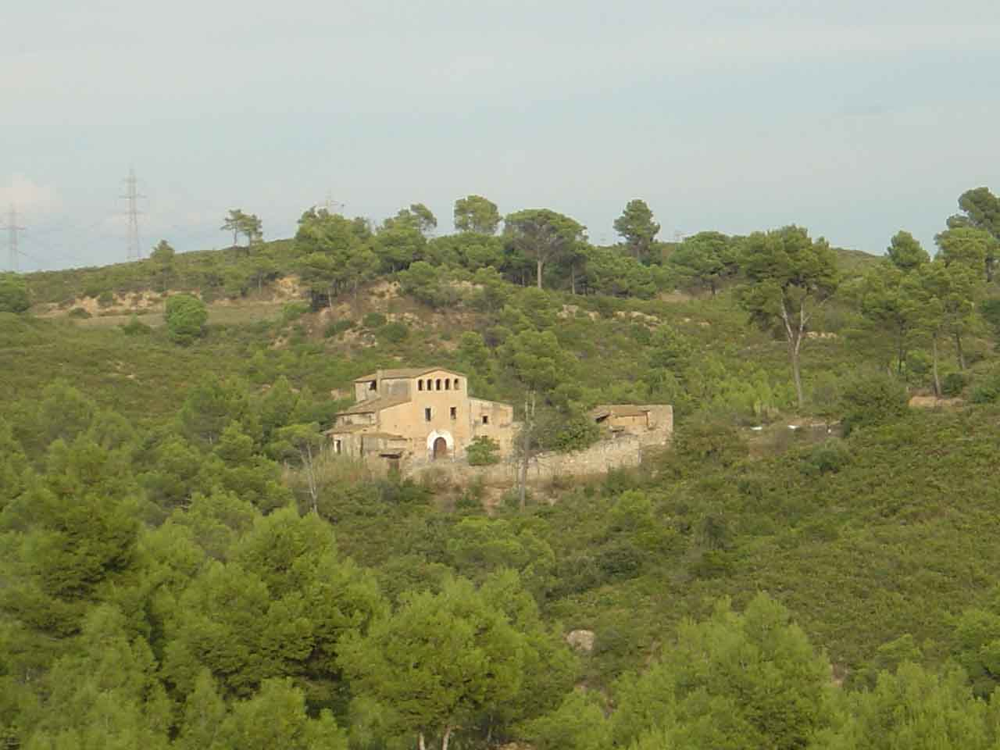
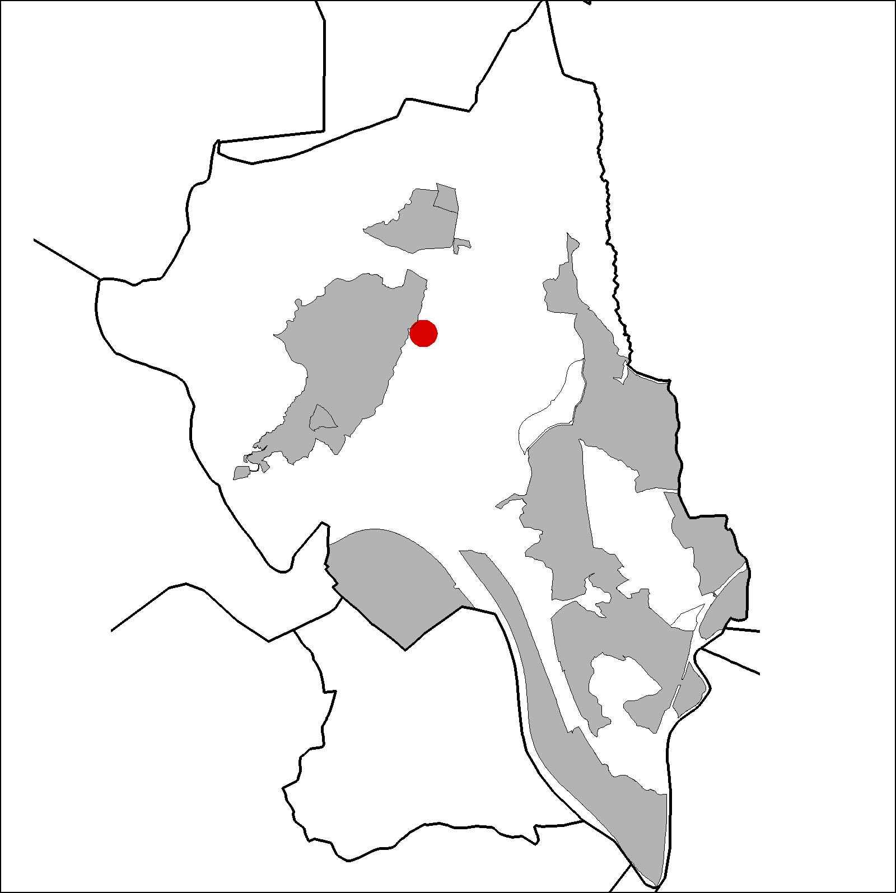

|  |
 |
Nom de l’element: Can Nicolau de Baix
Clau d’identificació: B.1.08
Nucli o indret: Entre el Torrent Bo i el de Pegueres.
UTM: X=413.572,Y= 4.593.929, 155 m snm
Referència Cadastral: Polígon 20, parcel·la 9502 (001404300DF19C)
Règim del sòl: Sòl no urbanitzable.
1.1. Època de construcció i tipologia:
Masia típica catalana, en forma basilical, del segle XIV. Els murs són de mamposteria i aglomerat de fang, ciment i carreus. La coberta presenta bigues de fusta i teula. Té un cos més alt amb una galeria d’arcs que ventilen el graner, i dues ales laterals més baixes amb cobertes inclinades. El portal és de punt rodó. A la façana de ponent hi ha una reixa de ferro forjat que data del 1856. La masia està envoltada per un mur, al que se li han afegit diferents cossos al llarg del temps. Les obertures tenen carreus de pedra als brancals. Es conserva una premsa de vi de roure del 1823. A la façana hi ha una reixa de ferro forjat amb fata de 1856.
1.2. Estat de conservació:
Es troba en ruïnes. Les estructures portants, els forjats, les voltes, la coberta i la façana es troben en mal estat. El paviment, les obertures i els acabats interiors es troben en ruïnes. Hi ha humitats.
1.3. Ús actual:
En desús, antigament era d’ús habitatge i agrícola.
1.4. Accés:
Accés difícil des de Can Costa o bé des de Can Coromines.
Masia tradicional del segle XIV, en forma basilical, de grans dimensions, situada en un entorn forestal.
3.1. Usos admesos:
Habitatge rural (màxim 3 habitatges); residencial; hoteler (excepte aparthotel; i amb un màxim de 30 places); oficines i serveis; indústria vinculada a productes del camp (industrial, categoria 1ª); educatiu; recreatiu cultural i social; recreatiu de restauració; esportiu.
3.2. Condicions d’ordenació:
Segons Pla Especial a redactar.
3.3. Accés i serveis:
Camí forestal que s’afaga des de Can Costa o bé des de Can Coromines.
BCIL (Bé Cultural d’Interes Local)